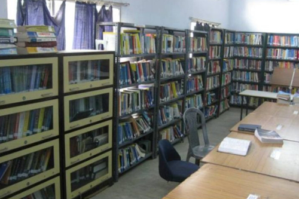

Official website :- uit.buruniv.ac.in check on google map

The University of Burdwan is a government engineering college located inWest Bengal, India.
On 15 September 1998, this college was established at the University Campus under the direct control and management of the University of Burdwan.
The college is an AICTE-approved institution and is affiliated to West Bengal University of Technology.


Intermediate Syllubus 3rd and 4th Sem Syllubus 5th To 8th Sem Syllubus
Gallary corner


some achievments of year 2021
BY-: sonu kumar singh